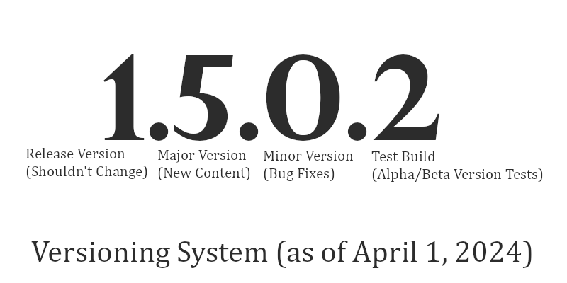

Starting April 1, 2024, all games will be updated to be constant with my new versioning system, and all save files will be updated to use a '.capt' file. This may cause data loss in Seed Clicker Tycoon. If you are concerned for your save file, do not update the game.
